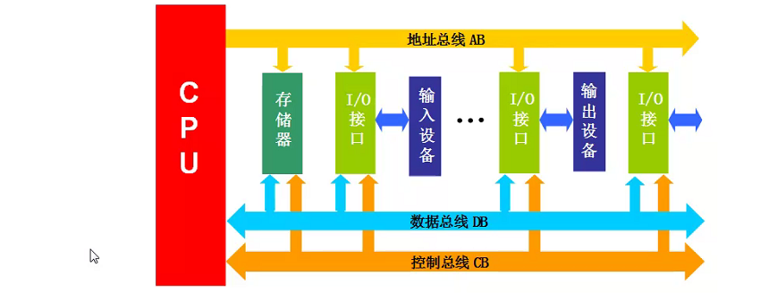
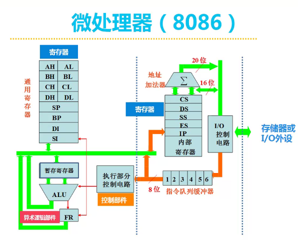
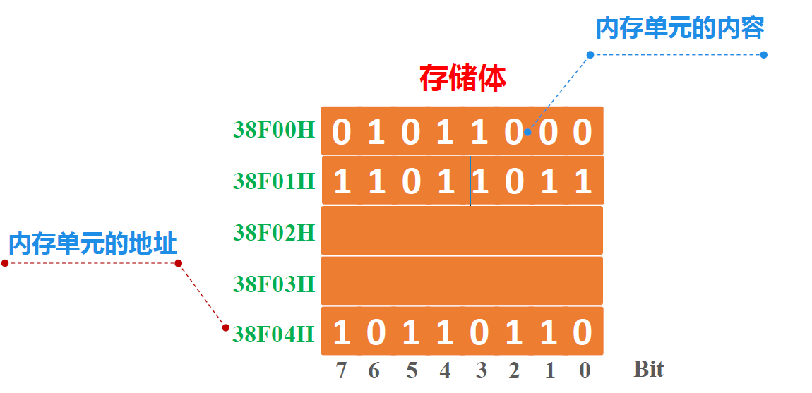

微机原理学习笔记
绪论
基本概念
微处理器(CPU)
一片或几片大规模集成电路组成的具有运算和控制器功能的中央处理器部件.
微型计算机
以微处理器为核心，配上存储器、输入输出接口电路以及系统总线组成的计算机。

单片机：微处理器、存储器和输入输出接口电路统一集成在单片芯片上，称为单片机
微型计算机系统
即 微型计算机+物理外设+系统软件
组成结构
Intel 8086/8088
Intel I8086: 16位寄存器 地址线(实际为20位) 16位数据线
Intel I8088: Intel I8086+外部数据线8位
分为
- EU 执行单元
- BIU 总线接口单元

寄存器
存储单元，一般由触发器组成。
- 内部寄存器（上图全是内部寄存器）
CPU内部的小存储单元。
CPU对外部数据处理时，往往先把数据取到寄存器中再处理。
- 外部寄存器
外部存储器时计算机中其他一些部件上用于暂存数据的寄存器，它与CPU之间通过端口交换数据
寄存器的特点：
- 快：存储器中的顶端。
- 少：以8086为例，CPU中仅有14个。
- 名：内部存储器有专有的名字而不是存储器用地址编号命名。
CPU性能指标
字长：表示CPU内部一次能同时处理的数据的位数，同时字长也标志着计算精度，与有效位数直接相关。
地址长度：决定了CPU的寻址能力和最大内存的大小。
运算速度：运算速度是微机性能的综合表现，它是指微处理器执行指令的速率，例如2GHz。
Q1: 32位CPU/64位CPU中的32位和64位指的是什么呢？
A1: 字长为32位/64位，即最多同时一次处理32位和64位数据。
Q2: 支持最大内存4GB其地址位长度是多少？
A2: $4GB=2^2 \times2^{10}\times2^{10}\times2^{10}=2^{32}B$ . 因为一个存储单元中一般存放一个字节（8bit=1Byte）的数据，存储单元的总数目称为存储容量。所以4GB的内存，地址长度为32位，也可以说成有32条地址线。
Q3: 16条地址线可以访问多少字节？20条地址线可以访问多少字节？
A3: $2^{16}B=64KB \2^{20}=1024KB$
总线
总线: 传递信息的一组公用导线。
系统总线: 从CPU引出的信号线，完成CPU与存储器或者IO的信息交换。
总线的使用特点：
- 时分复用: 在某一时刻，只能由一个总线主控设备来控制总线，其他总线主控设备此时必须放弃对总线的控制。
- 单发多收: 在连接系统的各个设备中，在某一时刻只能由一发送者发送信号，但可以有多个设备从总线上同时获得信号。
- 连接方式: 通过总线插槽来连接各个设备。
总线的分类：
- 控制总线: 从处理器引出的若干信号线，CPU通过它们与存储器或I/O设备进行控制信息交换。
- 地址总线: 传递地址信息的总线，CPU输出将要访问的内存或I/O地址，该总线为单向三态总线。
- 数据总线: 传递数据信息的总线。读，内存和IO到CPU，写：CPU到内存或IO，双向三态总线。
存储器
存储器是微机中存储和记忆部件，用来存放用二进制形式表示的数据、 文字、图像、程序，它以字节（BYTE）为单位。
内存：随机存取，速度快，容量小
程序与数据必须调入内存后才能被CPU执行与处理
外存：顺序存取，速度慢，容量大
硬盘、光盘、U盘等
两大操作：
- 写操作
1.CPU将要写入的内存单元的地址放到AB上
2.CPU将要写入的数据放入DB上
3.CPU发出写指令
- 读操作
1.CPU把要读入的内存单元的地址放到AB上，CPU发出读命令，从指定单元读出到DB.
内存单元的地址和内容

注：微机里规定，字母开头是16进制前要加0
例如 AFF03H 要写成 0AFF03H
以上存储体可以写成16进制表示的形式
| 地址 | 数据 |
|---|---|
| 38F00H | 58 |
| 38F01H | DB |
注意内存存放信息的顺序是高位在高地址，低位在低地址。
举例来看，示例中的地址38F00H存放的数据即为DB58, 而不是从低位往高位读的58DB。
输入输出接口
工作流程
再谈论工作流程之前，需要先熟悉一下CPU/内存里各寄存器和总线的缩写的具体意义方便理解。
以下表格只包含当前会涉及的部分（当前可公开情报了好家伙
| 缩写 | 英文 | 中文名称 | 功能 |
|---|---|---|---|
| ALU | Arithmetic Logic Unit | 算术逻辑单元 | 进行算术或逻辑运算以及进行位移循环等操作 |
| AX | Accumulator | 累加器 | CPU内最常用到的寄存器，运算前保存操作数，运算后保存结果 |
| AR | Address Register | 地址寄存器 | 用来存放正要取出的指令或操作数的地址 |
| CS | |||
| DR | Data Register | 数据寄存器 | 主要用来保存(用暂存可能会比较好)操作数和运算结果等信息,从而节省读取操作数所需占用总线和访问存储器的时间 |
| F | Flag Register | 标志寄存器 | 用来寄存执行指令时所产生的结果或状态的标志信号 |
| IR | Instruction Register | 指令寄存器 | 用来存放从存储器中取出的将要执行的指令（操作码） |
| ID | Instruction Decoder | 指令译码器 | 用来对指令寄存器IR中的命令进行译码 |
| PLA | Programmable Logic Array | 可编程逻辑器件 | 控制电路的所在地，数电里讲过 |
| PC/IP | Program Counter | 程序计数器 | 用来存放下一条指令的偏移地址。具有自增功能 |
| RA /RS | Register Array | 寄存器组 | 包括若干个通用寄存器和专用寄存器，其具体设置因不同的微处理器而异 |
CPU读操作（todo)
CPU写操作(todo)
程序执行流程(todo)
———————————————————截至2022.3.6————————————————————————————
8086/8088微处理器及其系统
8086总览
CPU结构
问题：CS:IP内部的结构
问题：他妈的申请内存放哪